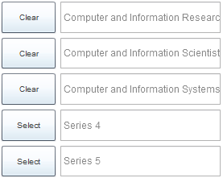
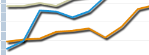

IT Jobs Study Help
- Go to http://itjobstudy.com/
and click on the IT Job Study link on the right side.:
- By default, Occupation will be
selected, which means that the graph will show small business jobs
as opposed to Industrial type jobs.
- If you select Industry, only IT
sector jobs will be displayed on the graph. For example, jobs for
companies like Google, Yahoo, IBM, etc.
- When Industry is chosen, select a
state and choose up to 5 sub-industries by clicking on them and
clicking Select for each one. Each sub-industry will be represented
by a line on the graph. When Occupation is chosen, select a state
and choose up to 5 occupations by clicking on them and clicking
Select for each one.

- You can mouse-over the lines and
see the salaries or number of jobs, as well as a pie chart.

- If you click Download, you can see
the graphs as an table document.
Help page created by Preston Holt, IT-oLogy Intern, Spring 2012